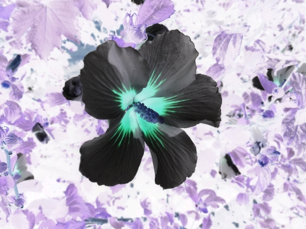
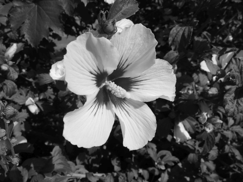

Základní grafické operace
V těchto cvičeních budeme pracovat s obrázkem: 
Byl vyfocen digitálním fotoaparátem a uložen v barvovém prostoru sRGB. (A samozřejmě také výrazně zmenšen.) Protože teď není úkolem snažit se načíst formát JPEG a také abychom měli stejnou startovní pozici, zde je tentýž obrázek převedený do formátu PNM-P6 (tedy binární RGB).
Jsou-li k práci potřeba nějaké rovnice, jsou uvedeny v nápovědě (a také odkázány na zdroj), proto se jí nevyhýbejte ^_~
Převeďte uvedený obrázek z pozitivu do negativu:

nápověda
Tady asi není moc co řešit – je třeba obrázek načíst, vyseparovat z něj RGB-data pro jednotlivé pixely a pro každou barvovou složku C provést transformaci
255 - C, tedy:
$$(R, G, B) → (255 - R, 255 - G, 255 - B)$$
A výsledný obrázek pak uložit (nebo zobrazit pomocí kanvasu).
Převeďte uvedený obrázek do odstínů šedi:
nápověda
Tohle už není tak jednoduché. Jelikož obrázek byl uložen v barvovém prostoru sRGB, je třeba nejdříve hodnoty jeho barvových složek převést z nelineární podoby příslušnou gama-transformací do podoby lineární:
$C_{linear} = \{\table C_{sRGB}/12.92; ({C_{sRGB}+0.055}/1.055)^2.4$
pro
$\table C_{sRGB}≤0.04045; C_{sRGB}>0.04045$
Až teprve poté je možno použít známý vzorec pro převod z RGB na světlosti..
$Y_{linear} = 0.2126 * R_{linear} + 0.7152 * G_{linear} + 0.0722 * B_{linear}$
..a pro potřeby zobrazení výsledek pak zase gama-zakódovat..
$Y_{sRGB} = \{\table 12.92 Y_{linear}; 1.055 Y_{linear}^{1/2.4} - 0.055$
pro
$\table Y_{linear}≤0.0031308; Y_{linear}>0.0031308$
..čímž „natlačíte“ hodnoty pro jednotlivé barvové složky zase zpátky do osmibitového rozsahu 0-255.
Rozdíl je sice nevelký (první pixel obrázku
PS: Pro porovnání převod bez aplikace gama-korekce:

Rozdíl je sice nevelký (první pixel obrázku
(63, 74, 26) je přepočítán na hodnotu 69,7 s konverzí a hodnotu 68,2 bez konverze), ale je dobře vidět, například pokud si můžete zaměňovat oba obrázky proti sobě na stejném místě.